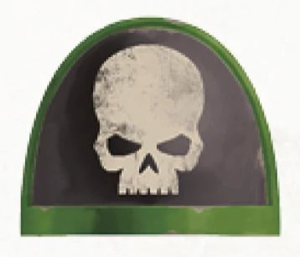

Mortifactors
| Mortifactors | |
|---|---|
| Space Marine Chapter of the Adeptus Astartes | |
 Heraldry of the Mortifactors Artwork © Games Workshop | |
| Founding | Second Founding, 31st millennium |
| Successor of | Ultramarines |
| Primarch | Roboute Guilliman |
| First Chapter Master | Sasebo Tezuka |
| Last recorded Chapter Master | Lord Magyar (killed in action) |
| Homeworld | Posul (destroyed by Hive Fleet Leviathan in the Third Tyrannic War) |
| Fortress-monastery | ''Basilica Mortis'', space station |
| Allegiance | Imperium of Mankind |
| Colours | Black, bone and silver |
| Notable battles | Ninth Black Crusade; Tarsis Ultra (997.M41); Third War for Armageddon (998.M41); Terran Crusade; War of Beasts; Plague Wars |
The Mortifactors are a loyal Space Marine Chapter. They are a Second Founding Successor of the Ultramarines, one of the Primogenitor Chapters. They recruit from the austere feral world of Posul, where the sun never rises over frigid plains and nomadic tribes are constantly at war with one another and practise cannibalism. Their neophytes are chosen from the most vicious and skilled warriors of the planet, who grow up with a dark view of life.[1]
The Mortifactors are a grim and brooding Chapter. They venerate their honoured dead to the point of obsession. Their open celebration of death makes some of their Imperial allies uneasy, especially the superstitious. Their fearsome appearance is a weapon in its own right. They have been seen in skeletal war paint and hooded robes, and they carry Power Scythes inlaid with bone.[1]
Posul
[edit]Posul is a bleak feral world lying so far from its star that it is wrapped in permanent darkness, and is counted among the Night Worlds. Its surface is craggy, frigid and mountainous. Its barbaric tribes know neither sunlight nor joy and live in constant bloodshed marked by cannibal rites. A Posulan youth may have taken hundreds of skulls before he is chosen as a neophyte. The tribes worship the Emperor as a great spirit called the "Ultimate Warrior".[2]
The Chapter's Chaplains do the recruiting, and many were once the shamans or chieftains of the tribes. Neophytes who fail the trials are disposed of. Each must kill his first prey and take its skull to earn a name in the Chapter, and those who have not yet killed are called the "Faceless".[2]
Beliefs and doctrine
[edit]The Mortifactors honour the Codex Astartes as the foundation of their way of life, but they hold that following it to the letter, without regard for what they have learned and observed, is blind orthodoxy. They think rigid adherence to any dogma the sign of a weak mind, and they follow the counsel of their Chaplains. They still venerate their primarch and swear their oaths to him and to the Emperor.[2]
On the eve of battle they seek a trance akin to death, in which they believe they commune with the primarch and their ancestors. Chaplains teach that death unites a warrior with the Emperor as the Ultimate Warrior, and that the fallen sit at his feast table in the Halls of the Victors. After battle they have been known to drink the blood and eat the flesh of the enemy, and to sever the head and flense the skull. To outsiders the Chapter seems to verge on heresy and has brought unwelcome Inquisitorial scrutiny, but their deep honour for the fallen of the Imperium has generally eased suspicion.[2]
Fortress-monastery
[edit]The ''Basilica Mortis'' is a vast space station in orbit of Posul, like a mountain range adrift in the void. It houses the Chapter's thousand battle-brothers and some seven and a half thousand serfs and servitors when it is full. Its halls are lined with the bleached skulls of the Chapter's dead, and seated along its docking tunnel are the preserved bodies of fallen battle-brothers. The main chapel is filled with the skulls of the Chapter's enemies.[2]
History
[edit]The Mortifactors were created during the Second Founding in the 31st millennium. Their first Chapter Master, Sasebo Tezuka, was a Captain of the Ultramarines. He led the new Chapter to the dark and frigid world of Posul, which the Imperium had granted to it. Tezuka used the Emperor's Tarot for guidance. He established the Chapter's fortress-monastery in orbit over the planet and earned many honours before his death.[1]
The surface and biosphere of Posul were later destroyed by Hive Fleet Leviathan during the Third Tyrannic War. The Chapter's fortress-monastery, the ''Basilica Mortis'', is a space station.[2]
Notable campaigns
[edit]In the Ninth Black Crusade (537.M38) the Mortifactors and the Lamenters answered the call of the hive world of Corillia. The Mortifactors considered the Lamenters cursed and would not fight beside them, leaving them to hold Corillia alone for six standard weeks until the White Scars and Ultramarines broke through the Chaos fleet.[2]
In the Achilus Crusade, from 777.M41, the Mortifactors served three times in the Jericho Reach, in the ash-choked forests of Ravacene on the Greyhell Front. They smeared themselves with volcanic ash to hunt unseen. They were enraged to find that the Kroot eat the flesh of the fallen, which they saw as an insult to their own rites of respect for the dead. Several Mortifactors have learned the ways of the Kroot and serve in the Deathwatch, and keep a trace of the ash on their faces. In 819.M41 a perceived slight brought the Mortifactors and the Crimson Fists to blows, and only Marneus Calgar prevented open war. The matter was kept from the Adeptus Terra. At an unrecorded date the Chapter joined the Raven Guard against daemons and Blood Cults of Khorne on Rhorsch.[2]
In 997.M41 the Mortifactors sent a company under Chaplain Astador in the strike cruiser ''Mortis Probati'' to help the Ultramarines' 4th Company, under Uriel Ventris, and the Deathwatch defend Tarsis Ultra against a splinter of Hive Fleet Leviathan. They proved worthy but reckless. In 998.M41, on the Feast of the Emperor's Ascension, the whole Chapter entered a mass meditation. They awoke with a shared vision that the Third War for Armageddon would be the "Last Battle", and recruited every tribesman of Posul who could be a Mortifactor. All ten companies sailed for Armageddon, leaving the fortress-monastery to their serfs. Afterwards the Chapter rebuilt its losses.[2]
In 999.M41 the Mortifactors fought in the Chaeros taskforce of the Thirteenth Black Crusade, and sent a contingent to join Roboute Guilliman on the Terran Crusade. Later, during the War of Beasts, they sent four companies to defend Vigilus. In the Plague Wars, about 012.M42, they contributed three companies to the "Spear of Espandor" campaign that retook the Espandor system.[2]
Notable members
[edit]The Chapter's first Chapter Master, Sasebo Tezuka, is dead. The last recorded Chapter Master, Lord Magyar, was a very old warrior in armour of bleached bone who wielded a great Power Scythe. He was beheaded by an Exarch of the Aeldari craftworld Biel-Tan, when its Swordwind opened a Webway gate inside the ''Basilica Mortis''. Most of the Chapter's Librarians perished in the psychic onslaught that accompanied the attack, and Chief Librarian Zdeno alone endured it.[2] Captain Artemis was seconded to the Deathwatch, where his gift for sensing alien influence suits him to the hunting of xenos.[2]
Timeline
[edit]| Date | Event |
|---|---|
| 31st millennium | The Mortifactors are raised in the Second Founding |
| Early in the Chapter's history | Sasebo Tezuka leads the Chapter to Posul and founds its fortress-monastery |
| 537.M38 | Ninth Black Crusade: the Mortifactors refuse to fight beside the Lamenters at Corillia |
| 997.M41 | A company defends Tarsis Ultra |
| 998.M41 | The whole Chapter goes to the Third War for Armageddon |
| 999.M41 | The Chaeros taskforce and the Terran Crusade |
| Third Tyrannic War | Posul is destroyed by Hive Fleet Leviathan |
| c. 012.M42 | Three companies fight in the Spear of Espandor campaign |